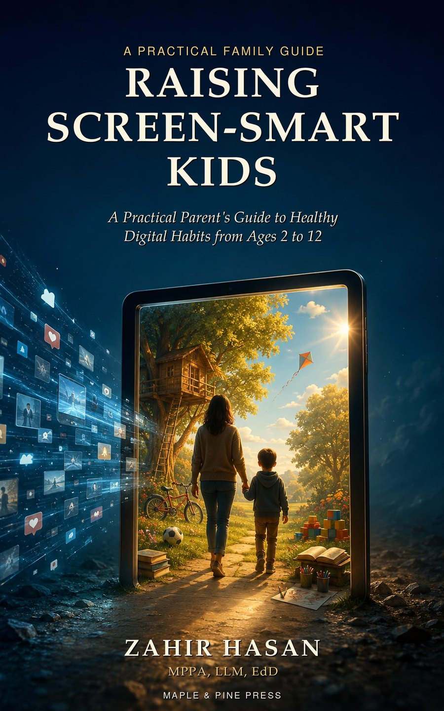

Raising Screen-Smart Kids
A Practical Parent’s Guide to Healthy Digital Habits from Ages 2 to 12

Your child is not addicted. Your home is unplanned. Here is the plan.
It is 7:18 on a school morning and the tablet has been asked to go away three times. If that scene is familiar, this book is for you. It does not tell you to ban screens, and it does not tell you to give up. It shows you how to build a family system in which technology has useful jobs, clear boundaries, and no automatic right to displace sleep, play, paper, and conversation.
Drawing on the current guidance of pediatric bodies in North America, Europe, Australia, and Japan, and on the research behind it, Raising Screen-Smart Kids gives parents of children aged two to twelve a seven-step method called BALANCE, a fourteen-day family reset, and a toolkit they can use tonight:
• 74 alternatives that meet the need a screen was meeting
• 50 word-for-word scripts for the hardest moments: “just one more,” “everyone else has it,” the meltdown, the sneaked device
• 30 family case files, 20 troubleshooting cards, and answers to the 25 questions parents ask most
• 12 printable worksheets, each shown blank and then filled in by one family
• a step-by-step walkthrough of the parental controls on iPhone and iPad, Android, Nintendo Switch, PlayStation, Xbox, YouTube Kids, Netflix, Roblox, and the home router, and the eight ways children get around them
• one family’s complete fourteen-day reset, setbacks included
• an appendix comparing official screen-time guidance in the United States, Canada, the United Kingdom, Australia, Japan, and from the World Health Organization
Age-by-age chapters cover the toddler and preschool years, ages six to nine, and ages ten to twelve, including the first-phone decision, gaming, group chats, and why public social media can wait. A chapter on paper, pencil, and books explains what the research actually shows about reading and handwriting on screens, and what to protect.
Practical, evidence-based, and free of guilt. The target is not zero screens. It is a childhood with technology in its place.
Ebook and paperback · Maple & Pine Press
- Author
- Dr. Zahir Hasan
- Publisher
- Maple & Pine Press, Tokyo
- List
- Education & Practical Guides